Nächste Seite: Exkurs (Jedem Partikel seine Aufwärts: Kollisionsdetektion Vorherige Seite: Kollisionsdetektion Inhalt
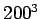
Zellen mit der Möglichkeit, pro Zelle 20 Partikelindizes zu speichern. Dies setzt voraus, dass die Physik niemals mehr als 20 Partikel pro Zelle zulässt. Unter Verwendung von vier Byte Adressen für die Partikel resultierte das in einem Speicherbedarf zu Programmstart von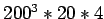
B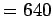
MB.
Der auf diesem Gitter arbeitende Algorithmus musste entweder berechnen, mit welcher der benachbarten 26 Zellen das Partikel interagieren kann (
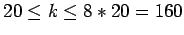 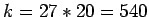 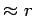 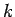 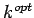 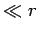
Eine dynamische Speicherbelegung reduzierte zwar den Speicherbedarf auf 1B pro Zelle für leere Zellen, was mir allerdings zum einen nicht die schon angekündigten mehr als 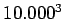 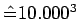 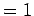